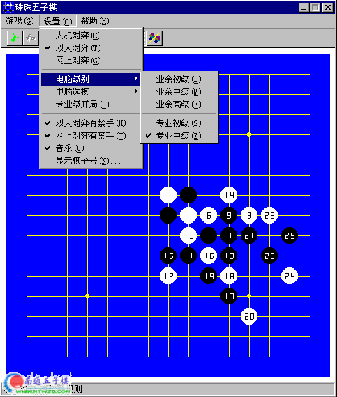

珠珠五子棋
#1 珠珠五子棋 作者：有志青年 发表时间：2006-2-5 16:21:47
《珠珠五子棋》软件主要包括人机对弈、双人对弈和棋谱研究、局域网上的双人对弈；规则上分为业余的无禁手规则和专业的有禁手规则；适用于大众化的娱乐和研究。人机对弈电脑级别有业余初级、业余中级、业余高级、专业初级、专业中级，业余级使用无禁手规则，专业级指定开局，使用有禁手规则。选棋可设置为：电脑执黑、电脑执白、人和电脑轮流执黑。
双人对弈可设置为无禁手规则和有禁手规则，可使用双人对弈进行棋谱研究，双人对弈和人机对弈可随时转换。
网上对弈使用TCP/IP网络协议，使连接的双方在网络中的两台计算机上对弈，可设置为无禁手规则和有禁手规则。
对局中可进行游戏存档，可以后再对存档游戏对弈或研究。可以设置从任一棋子开始显示序号，显示的序号可以从任一数字开始。
操作方法
1、下子
用鼠标或方向键移动光标，单击鼠标左键或按空格键下子。
2、单击鼠标右键定位上一步下子处。
3、人机对弈和双人对弈可悔棋。
4、网上对弈连接时必须是一方“等待另一方”，另一方是“连接到等待方”，连接成功后的规则使用“连接到等待方”的规则，开始由“等待另一方”执黑，以后双方轮流执黑。

#2 Re:珠珠五子棋 作者：vvovv 发表时间：2006-2-13 13:33:53
我就想要这种
#3 Re:珠珠五子棋 作者：k23456 发表时间：2006-3-5 21:41:45
我就想要这种#4 Re:珠珠五子棋 作者：无声无息 发表时间：2006-3-12 20:20:57
和黑石比较怎样？#5 Re:珠珠五子棋 作者：qinyiyu 发表时间：2006-3-25 1:46:58
这个好象挺不错哦#6 Re:珠珠五子棋 作者：有志青年 发表时间：2006-5-7 15:53:22
http://www.ntwzq.com/ShowPost.asp?ThreadID=441
这是升级版本
#7 Re:珠珠五子棋 作者：烟花句 发表时间：2007-9-5 13:29:55
可以放到手机上的JAVA里吗?#8 Re:珠珠五子棋 作者：孙天航 发表时间：2007-11-10 22:47:05
fydryhfdhfhhhdfh